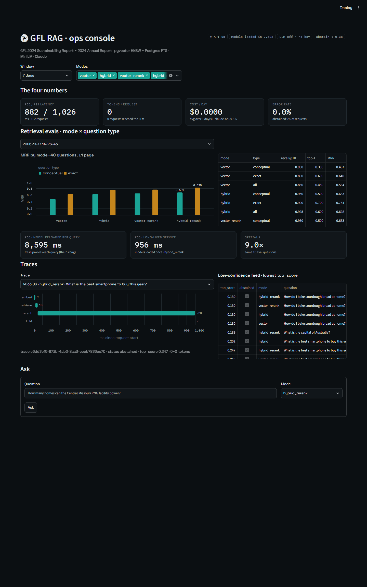

Retrieval quality by question type
MRR (mean reciprocal rank), higher is better
What the numbers say
- Hybrid helps exact-term questions: MRR → .
- It also helped conceptual questions ( → ), plausibly because report prose repeats domain nouns (RNG, MRF, EPR) that MiniLM embeds loosely. A guess, not a test.
- The cross-encoder reranker gives the biggest jump in top-1, and hybrid + rerank is best on every metric.
- The cost is latency: reranking 30 candidates on CPU takes ~0.9 s.
- With 20 questions per type, one question moves recall by 0.05. Treat smaller gaps as noise.
| Mode | MRR conceptual | MRR exact | MRR all | Recall@10 all | Top-1 all | p50 search |
|---|
Load the models once
Same 10 questions in hybrid + rerank mode. "Cold" starts a fresh process per query that loads the embedder and cross-encoder; "service" is the long-lived FastAPI process.
Dots are the 10 individual runs; the bar is the median (p50).
Knowing when not to answer
Claude answers only from the top 5 passages and cites each claim as [doc p.N]. Two layers decide when to say "Not found in the GFL documents."
"Who won the 2022 World Cup?"
Top similarity 0.28: abstains before Claude is called, costs nothing. Out-of-scope questions score 0.13–0.29; the lowest in-scope question scores 0.458.
"What is GFL's stock price today?"
On-topic but unanswerable, so similarity is high (0.63) and the threshold can't catch it. The prompt rule does: Claude replies "Not found in the GFL documents."
"What were GFL's 2024 revenues?"
$7,862.0 million vs $7,515.5 million in 2023, with the segment split, cited to annual report pp. 156–157. ~5 s end to end, ~$0.02.
How it is built
Everything runs locally on one CPU machine; this page is a static snapshot of the results.
PDFs ─► ingest.py ─► Postgres 16 + pgvector
PyMuPDF blocks documents: embedding vector(384), HNSW cosine
drop repeated headers + tsvector GIN for keyword search
~180-word chunks, overlap traces: one row per /ask
MiniLM embed, COPY load
question ─► FastAPI service (models loaded once)
search(mode) vector | hybrid (RRF) | vector + rerank | hybrid + rerank
top similarity < 0.38 ? ─► "Not found in the GFL documents."
Claude ─► answer from top 5 chunks with [doc p.N] citations
telemetry ─► traces ─► Streamlit ops console
The ops console
Evals on the same screen as health metrics: p50/p99, tokens per request, cost per day, error rate, a trace waterfall and a low-confidence feed.

The 40 eval questions
Rank of the first correct passage (right document, within ±1 page) in each mode; "—" means not in the top 10.
| Question | Type | Source | vector | hybrid | vec + rr | hyb + rr |
|---|